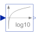
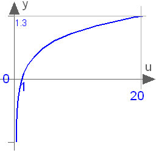

Log10Output the base 10 logarithm of the input (input > 0 required) |

|
Information
This information is part of the Modelica Standard Library maintained by the Modelica Association.
This blocks computes the output y as the base 10 logarithm of the input u:
y = log10( u );
An error occurs if the input u is zero or negative.

Connectors (2)
| u |
Type: RealInput Description: Connector of Real input signal |
|
|---|---|---|
| y |
Type: RealOutput Description: Connector of Real output signal |
Used in Components (1)
|
Modelica.ComplexBlocks.ComplexMath Calculate quantities to plot Bode diagram |